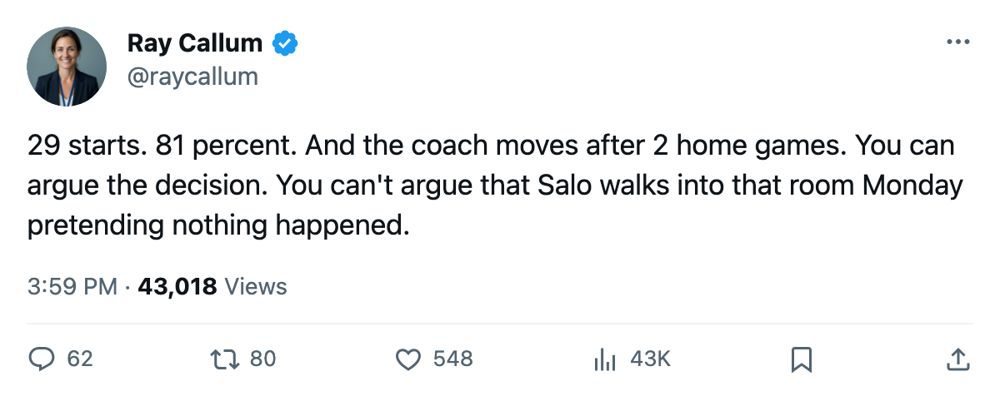

Goalie Watch: Edmonton Sits Salo After 29 Starts and Gives Conklin the Crease
The Oilers conceded 10 goals in 2 home games and pulled the starter who has played 81 percent of their schedule
 Ray CallumSenior correspondent · Home Ice Network
Ray CallumSenior correspondent · Home Ice Network
 Edmonton Oilers moved
Edmonton Oilers moved  Ty Conklin75 to G1 and dropped
Ty Conklin75 to G1 and dropped  Tommy Salo88 from the dressing room entirely after a 6-1 home loss to Toronto on 2005-12-28. Conklin has started 7 games this season. Salo has 29.
Tommy Salo88 from the dressing room entirely after a 6-1 home loss to Toronto on 2005-12-28. Conklin has started 7 games this season. Salo has 29.
The 2 home games that broke the patience: a 4-1 loss to Vancouver on 2005-12-26 and Saturday's 6-1 shellacking by Toronto. Ten goals conceded at Rexall Place in 4 days. Edmonton is 10-17-4, 34 points, 11th in the West, and on a 3-game losing streak that has cost them 11 goals against.
29 of 36 starts
Salo carried 81 percent of the starts heading into this weekend. He logged 29 games in 36 team appearances. Conklin had 7, Jason LaBarbera66 2. The bench moved without waiting for LaBarbera to get a third look. Conklin gets the crease with Edmonton hosting Phoenix on 2005-12-30.
The club has 23 injury spells and 165 days lost this season, the 9th-highest total in the league. Alexei Semenov77 (shoulder) is out through 2006-01-11. Salo himself has been on the injured list twice this season, neither spell carrying a designated body part.
Home record: 6-11. Road record: 9-10. Edmonton scores more away from Rexall Place than in front of its own building, which suggests the problem reaches past the crease. But the goalie is what the coach changed.
Conklin has 7 starts and a 19 percent share of the workload. He has never held a full-season crease in this league. The desk at 104 Street knows that, and they made the move anyway.
What happens to a dressing room when you pull a man with 29 starts after 2 bad games in his own building? Salo has been the answer for long stretches in this building for years. The 81 percent share reflects the coach's trust, not just who happened to be healthy. That trust is gone, or at least paused, and the next 4 games will tell Edmonton whether the room believes the move was necessary.
Phoenix arrives Tuesday on a 1-game losing streak of their own, 10-20-2, 30 points, 13th in the West.
